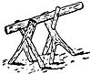
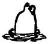
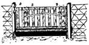

The Old-Time Farm Magazines
January/February 1977
This page contains excerpts from issues of Succesful Farming dated 1907.
HANDY DEVICES
SAW BUCK.

Take two good sized forked sticks and bore holes through above the forks and insert strong sticks. This makes each part a tripod that will stand up alone. They are convenient in sawing long or heavy pieces and are easy to fit any length of stick. - E. F., Iowa.
POULTRY WATERER.

Take a jug and drill a quarter inch hole in one side near the bottom and set the jug in a shallow pan. Fill with water and cork up tight. Air will prevent pan from flowing over, and will regulate the supply of water. It is automatic when jug contains water. Roy McDonald, Tex.
HOG SCRAPER.

To scrape the bristles off a hog after scalding take a small iron hoop and fit a block half way so as to leave a flange. Insert a handle and you have a convenient scraper similar to those the packers use.- Robert Johnson, Conn.
HOCK TROUGH GATE.

To keep hogs from piling into the trough when swill is being poured in, the following will do for a few hogs. Where the trough is over 12 feet it is hard to manipulate the gate, because they pile against it.
The trough is secured between two solid posts so hey can't root it away, because it is a part of the yard or pen fence. Fit a gate of 1x4 stuff as shown. The top rail is just long enough to work freely between the posts. It rests in a notched piece at C at each end, and is kept from being rooted out by pieces D. This enables the gate to swing freely over the trough. It must be kept some way from swinging past either edge of trough more than is necessary to drop the catches A A. These slide freely between two slats and are held in place by pieces B B at top and bottom. A short trough needs only one catch A. Which is then placed in the middle of gate.. To operate two catches at once when hogs are crowding for feed, make some latch raisers out of two pieces of lath as shown. These are pivoted on the slats nest A and work on a bolt or screw in A, being slotted a, little to allow play. Push down on the long ends with one hand while you switch the hogs off the gate and the gate is released swings to the other side of trough.
AGRICULTURE
The farmers of the country are requested to contribute to this Department.
Dairying.
Many farmers now pursue the method of all the year round dairying and find it a profitable one. With a fine product of butter a ready market is assured at good prices. Dealers like to find such producers for the reason that there is then a supply right along that can be depended upon.
This is quite different from summer dairying when with the advent of cold weather production ceases, leaving the dealer to look somewhere else for a supply.
To be successful with winter dairying requires suitable accommodations for the cows, the best kinds of forage and such grain feeds as will add to the value of the daily ration and all necessary care.
With these there should be little or no difficulty in making a fine quality of butter during the winter months, such as will be in quick demand at good prices. At this season of the year the work can be well attended to and found to be profitable. Where this practice is followed the cows should come fresh in milk during late autumn or early winter, or some for a more uniform supply of milk might plan to have them distributed through the year.
Where what is termed winter dairying is followed there is a good opportunity afforded for raising heifer calves for the supply of the dairy or for sale. With warm, comfortable quarters and properly fed and cared for, these will grow finely and by another spring be large enough to turn to pasture. This is an advantage that should not be overlooked. And then when there is skimmed milk for the purpose swine may he kept at a profit, as many have found from experience.
Of course, all of this implies careful attention to all details, but this should come within the province of the wide-awake, up-to-date (farmer, who is willing and anxious to do the best possible and is not afraid of the necessary efforts for the desired success which he wishes to obtain, and which is his by right as in the line of successful farming.- E. R. Towle, Franklin Co., Vt.
BURYING BEES FOR WINTER.
My method of wintering bees is to bury them. I dig a trench 6 inches wider than the hive is long, and deep enough so that with something to keep the hives from 4 to 6 inches from the bottom, the hive is about one-third above ground. I have always used 6-inch fence boards set on edge in the bottom of the trench to set my hives on. This gives a, 6-inch space below the hives.
If one does not have the boards, 2x4 scantling will do as well. I remove the bottom boards so that all bees that die daring the winter fall into the bottom of the trench.
Place the hives close together, then cover with two feet of straw, then throw on all the dirt from the trench and when this is done, dig a. ditch on each side to carry off water, throwing all the dirt over the bees. Do not leave any vent holes. The ties won't smother.
Forest Preservation.
The American people are impulsive. They rush into things for the almighty dollar without a thought for the future. The pioneer slashed down the trees and burned them, then later planted shade trees about his house. The timber merchant laid waste the fine forests that he might be wealthy.
The great advance in the price of lumber in recent years is due to the lumber trust, the protective tariff and the scarcity of trees, all three combined. Instead of learning from other nations in regard to the forests, we, like sheep, have done just as they.
Now the sentiment of the people has awakened an interest in timber preservation and replanting of the denuded mountain sides. The government has taken a firm hand in this matter and the western ranch-men are up in wrath against the department of forestry. They who made free pasture of the mountain sides, thus killing the young trees that would have reclothed the naked mountain range, think the government has gone too far. But has it? Must the greed of a few men cause havoc to hundreds of thousands who are dependent upon the forests.
W e do not refer only to the lumber interests. We can build out of steel and cement if need be. But forests play an important part in the distribution of surface water and in this way farmers for hundreds of miles from forests are concerned. If these mountain sides once covered with trees were now being cultivated the havoc would not be so great.
Trees grow clear to the perpetual snow line. They not only prevent avalanches of snow and' ice but they form a mulch that holds the melted snow water so that it does not rush down the rocky sides, but percolates slowly through the soil. Remove these and the soil soon washes away and the big rain storms are rapidly carried down the rocks into the ravines and canons in a great flood-head, carrying death and destruction to everything in its way. Out upon the plains the flood spreads beyond the river banks and crops suffer for miles beyond the mountain ranges.
When the surface soil or mulch which the trees helped to form is washed away what then can grow on the mountain sides? What then will the rangeman do? He will have to register his kick against a foolish fate rather than against the government. But he must vacate just the same.
There are plenty of places to grow grass at a profit without using the old forest lands. Trees can be grown where no other crop but grass will grow. And good agricultural lands are too valuable-to be turned into government forest reservations. Tree protection is in the interest of all humanity and land grabbing by the few ranchmen is not.
|
 SAW BUCK. |
 POULTRY WATERER. |
HOG SCRAPER. |
|
 HOCK TROUGH GATE. |
|
|